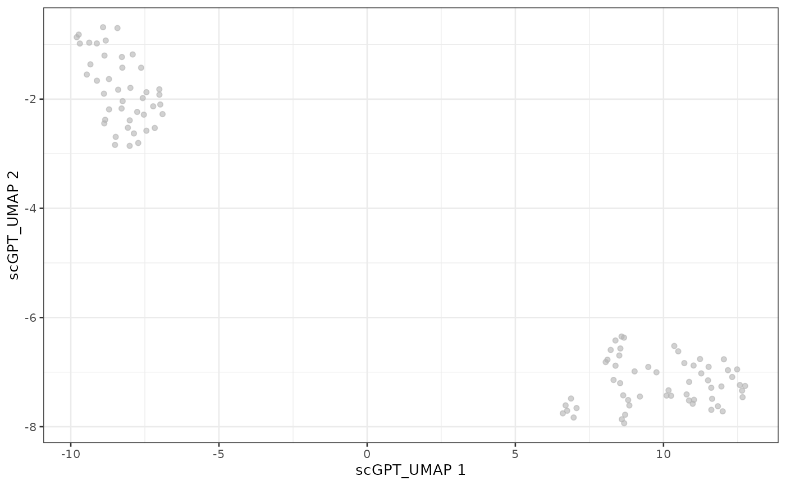

Running scGPT with fomo
scGPT.RmdIntroduction
This vignette demonstrates how to use Run_scGPT to embed
single-cell RNA-seq data using the scGPT model(Cui et al. 2024).
scGPT is a foundation model for single-cell mRNA-Seq data. scGPT can
be used in many different context and strategies (see their official github repository). In
particular, scGPT provides multiple possible pretrained models which are
linked to in their github
README. The models differ based on the training data used. The most
common choice of model is the whole-human scGPT_human,
which is trained 33 million normal human cells across a range of tissue
types. Tissue-type specific models are available. There is also a
“continual pretrained model”, scGPT_CP
that inherits the pre-trained scGPT whole-human model, and was further
supervised by extra cell type labels (using the Tabula Sapiens
dataset).
In Run_scGPT we run a basic “zero-shot” embedding of the
data via the scg.tasks.embed_data() function in the
scgpt python package. “Zero-shot” means that the input data
is run through the pretrained model, and the output embeddings are
returned. Depending on which model is used, this could correspond to the
zero-shot
tutorials of scGPT. Those tutorials also provide strategies for how
to use these to perform integration of datasets.
Huggingface
scGPT also provides access to their model huggingface model. We do not
currently provide implementation of this model, since scGPT offers many
more models than just that available on huggingface. We have focused on
an implementation that allows users the ability to work with and compare
these many different models. However, this means users must download the
models and store them in a local directory for
Run_scGPT.
Prerequisites
Run_scGPT takes a .h5ad filename containing
the cell transcripts data and a pretrained scGPT model directory as
input, and returns a matrix of cell embeddings. We cache all files in a
dedicated model_dir folder.
library(googledrive)
library(tools)
drive_deauth()
# create cache for fomo data
model_dir <- tools::R_user_dir("fomo/scgpt", which = "cache")
dir.create(model_dir, recursive = TRUE, showWarnings = FALSE)Input data
The input .h5ad file used in this vignette is the
example data provided by scGPT (batch_covid_subsampled_train.h5ad )[https://github.com/bowang-lab/scGPT/blob/main/tutorials/zero-shot/Tutorial_ZeroShot_Reference_Mapping.ipynb],
but we have subsetted to the first 100 cells so that it will run
instantaneously even on a CPU, which we provide in a google drive and
download the h5ad file from this location.
url <- "https://drive.google.com/file/d/1Do7CXaaSTwEySGWHMKAkpN5G_g-OY8y2"
folder_id <- googledrive::as_id(url)
files <- drive_get(folder_id)
h5ad_file <- file.path(model_dir, files[1,]$name)
if(!file.exists(h5ad_file))
drive_download(files[1,], path = h5ad_file)## File downloaded:## • batch_covid_subsampled_test_100cells.h5ad
## <id: 1Do7CXaaSTwEySGWHMKAkpN5G_g-OY8y2>## Saved locally as:## • /home/runner/.cache/R/fomo/scgpt/batch_covid_subsampled_test_100cells.h5adModel weights
The pretrained scGPT model directory that we use is
scGPT_human model which can be downloaded from a google
drive provided in https://github.com/bowang-lab/scGPT. The model directory
should contain a .pt file with the model weights, along
with vocab.json and args.json.
url <- "https://drive.google.com/drive/folders/1oWh_-ZRdhtoGQ2Fw24HP41FgLoomVo-y"
folder_id <- googledrive::as_id(url)
files <- drive_ls(drive_get(folder_id), recursive = TRUE)
for (i in seq_along(files)){
path <- file.path(model_dir, files[i,]$name)
if(!file.exists(path))
drive_download(files[i,], path = path)
}## File downloaded:## • vocab.json <id: 1H3E_MJ-Dl36AQV6jLbna2EdvgPaqvqcC>## Saved locally as:## • /home/runner/.cache/R/fomo/scgpt/vocab.json## File downloaded:## • args.json <id: 1hh2zGKyWAx3DyovD30GStZ3QlzmSqdk1>## Saved locally as:## • /home/runner/.cache/R/fomo/scgpt/args.json## File downloaded:## • best_model.pt <id: 14AebJfGOUF047Eg40hk57HCtrb0fyDTm>## Saved locally as:## • /home/runner/.cache/R/fomo/scgpt/best_model.pt
list.files(model_dir)## [1] "args.json"
## [2] "batch_covid_subsampled_test_100cells.h5ad"
## [3] "best_model.pt"
## [4] "vocab.json"Running scGPT
Run Run_scGPT to embed the cells given the path to the
h5ad file on disk h5ad_file and the mode directory
model_dir. The result is a matrix with one row per cell and
one column per embedding dimension:
library(fomo)
library(anndataR)
result <- Run_scGPT(
h5ad_file = h5ad_file,
model_dir = model_dir,
gene_col = "gene_name"
)## Using Python: /home/runner/.pyenv/versions/3.12.13/bin/python3.12
## Creating virtual environment '/home/runner/.cache/R/basilisk/1.24.0/fomo/0.1.0/scgpt' ...## + /home/runner/.pyenv/versions/3.12.13/bin/python3.12 -m venv /home/runner/.cache/R/basilisk/1.24.0/fomo/0.1.0/scgpt## Done!
## Installing packages: pip, wheel, setuptools## + /home/runner/.cache/R/basilisk/1.24.0/fomo/0.1.0/scgpt/bin/python -m pip install --upgrade pip wheel setuptools## Installing packages: 'scgpt==0.2.4', 'torch==2.2.0', 'ipython==9.12.0', 'numpy==1.26.4'## + /home/runner/.cache/R/basilisk/1.24.0/fomo/0.1.0/scgpt/bin/python -m pip install --upgrade --no-user 'scgpt==0.2.4' 'torch==2.2.0' 'ipython==9.12.0' 'numpy==1.26.4'## Virtual environment '/home/runner/.cache/R/basilisk/1.24.0/fomo/0.1.0/scgpt' successfully created.
## scGPT - INFO - match 1173/1200 genes in vocabulary of size 60697.
dim(result)## [1] 100 512The resulting embedding of scGPT will still be of high dimensions, we can further reduce the dimensionality with PCA and UMAP.
library(scrapper)
# reduce with PCA
result_pca <- runPca(t(result), number = 30, scale = TRUE)
result_pca <- result_pca$components
# reduce with UMAP
result_umap <- runUmap(result_pca)Now we can add this new embeddings to a SingleCellExperiment generated from the same h5ad file.
library(SingleCellExperiment)## Loading required package: SummarizedExperiment## Loading required package: MatrixGenerics## Loading required package: matrixStats##
## Attaching package: 'MatrixGenerics'## The following objects are masked from 'package:matrixStats':
##
## colAlls, colAnyNAs, colAnys, colAvgsPerRowSet, colCollapse,
## colCounts, colCummaxs, colCummins, colCumprods, colCumsums,
## colDiffs, colIQRDiffs, colIQRs, colLogSumExps, colMadDiffs,
## colMads, colMaxs, colMeans2, colMedians, colMins, colOrderStats,
## colProds, colQuantiles, colRanges, colRanks, colSdDiffs, colSds,
## colSums2, colTabulates, colVarDiffs, colVars, colWeightedMads,
## colWeightedMeans, colWeightedMedians, colWeightedSds,
## colWeightedVars, rowAlls, rowAnyNAs, rowAnys, rowAvgsPerColSet,
## rowCollapse, rowCounts, rowCummaxs, rowCummins, rowCumprods,
## rowCumsums, rowDiffs, rowIQRDiffs, rowIQRs, rowLogSumExps,
## rowMadDiffs, rowMads, rowMaxs, rowMeans2, rowMedians, rowMins,
## rowOrderStats, rowProds, rowQuantiles, rowRanges, rowRanks,
## rowSdDiffs, rowSds, rowSums2, rowTabulates, rowVarDiffs, rowVars,
## rowWeightedMads, rowWeightedMeans, rowWeightedMedians,
## rowWeightedSds, rowWeightedVars## Loading required package: GenomicRanges## Loading required package: stats4## Loading required package: BiocGenerics## Loading required package: generics##
## Attaching package: 'generics'## The following objects are masked from 'package:base':
##
## as.difftime, as.factor, as.ordered, intersect, is.element, setdiff,
## setequal, union##
## Attaching package: 'BiocGenerics'## The following objects are masked from 'package:stats':
##
## IQR, mad, sd, var, xtabs## The following objects are masked from 'package:base':
##
## anyDuplicated, aperm, append, as.data.frame, basename, cbind,
## colnames, dirname, do.call, duplicated, eval, evalq, Filter, Find,
## get, grep, grepl, is.unsorted, lapply, Map, mapply, match, mget,
## order, paste, pmax, pmax.int, pmin, pmin.int, Position, rank,
## rbind, Reduce, rownames, sapply, saveRDS, table, tapply, unique,
## unsplit, which.max, which.min## Loading required package: S4Vectors##
## Attaching package: 'S4Vectors'## The following object is masked from 'package:utils':
##
## findMatches## The following objects are masked from 'package:base':
##
## expand.grid, I, unname## Loading required package: IRanges## Loading required package: Seqinfo## Loading required package: Biobase## Welcome to Bioconductor
##
## Vignettes contain introductory material; view with
## 'browseVignettes()'. To cite Bioconductor, see
## 'citation("Biobase")', and for packages 'citation("pkgname")'.##
## Attaching package: 'Biobase'## The following object is masked from 'package:MatrixGenerics':
##
## rowMedians## The following objects are masked from 'package:matrixStats':
##
## anyMissing, rowMedians
sce <- anndataR::read_h5ad(h5ad_file, as = "SingleCellExperiment")
reducedDim(sce, "scGPT") <- result
reducedDim(sce, "scGPT_PCA") <- t(result_pca)
reducedDim(sce, "scGPT_UMAP") <- result_umap
library(scater)## Loading required package: scuttle##
## Attaching package: 'scuttle'## The following objects are masked from 'package:scrapper':
##
## aggregateAcrossCells, normalizeCounts## Loading required package: ggplot2
plotUMAP(sce, dimred = "scGPT_UMAP")
Basic Python script
The basic python script that underlies this function is:
import scanpy as sc
import scgpt as scg
adata = sc.read_h5ad(h5ad_file)
ref_embed_adata = scg.tasks.embed_data(
adata,
model_dir,
gene_col=gene_col,
batch_size=64,
)There is additional code added to ensure that it runs on MacOS.
Session Info
## R version 4.6.1 (2026-06-24)
## Platform: x86_64-pc-linux-gnu
## Running under: Ubuntu 24.04.4 LTS
##
## Matrix products: default
## BLAS: /usr/lib/x86_64-linux-gnu/openblas-pthread/libblas.so.3
## LAPACK: /usr/lib/x86_64-linux-gnu/openblas-pthread/libopenblasp-r0.3.26.so; LAPACK version 3.12.0
##
## locale:
## [1] LC_CTYPE=C.UTF-8 LC_NUMERIC=C LC_TIME=C.UTF-8
## [4] LC_COLLATE=C.UTF-8 LC_MONETARY=C.UTF-8 LC_MESSAGES=C.UTF-8
## [7] LC_PAPER=C.UTF-8 LC_NAME=C LC_ADDRESS=C
## [10] LC_TELEPHONE=C LC_MEASUREMENT=C.UTF-8 LC_IDENTIFICATION=C
##
## time zone: UTC
## tzcode source: system (glibc)
##
## attached base packages:
## [1] stats4 tools stats graphics grDevices utils datasets
## [8] methods base
##
## other attached packages:
## [1] scater_1.40.1 ggplot2_4.0.3
## [3] scuttle_1.22.0 SingleCellExperiment_1.34.0
## [5] SummarizedExperiment_1.42.0 Biobase_2.72.0
## [7] GenomicRanges_1.64.0 Seqinfo_1.2.0
## [9] IRanges_2.46.0 S4Vectors_0.50.1
## [11] BiocGenerics_0.58.1 generics_0.1.4
## [13] MatrixGenerics_1.24.0 matrixStats_1.5.0
## [15] scrapper_1.6.3 anndataR_1.2.0
## [17] fomo_0.1.0 googledrive_2.1.2
## [19] BiocStyle_2.40.0
##
## loaded via a namespace (and not attached):
## [1] tidyselect_1.2.1 viridisLite_0.4.3 vipor_0.4.7
## [4] dplyr_1.2.1 farver_2.1.2 viridis_0.6.5
## [7] filelock_1.0.3 S7_0.2.2 fastmap_1.2.0
## [10] rsvd_1.0.5 digest_0.6.39 lifecycle_1.0.5
## [13] magrittr_2.0.5 compiler_4.6.1 rlang_1.2.0
## [16] sass_0.4.10 yaml_2.3.12 knitr_1.51
## [19] labeling_0.4.3 S4Arrays_1.12.0 curl_7.1.0
## [22] reticulate_1.46.0 DelayedArray_0.38.2 RColorBrewer_1.1-3
## [25] abind_1.4-8 BiocParallel_1.46.0 withr_3.0.3
## [28] purrr_1.2.2 desc_1.4.3 grid_4.6.1
## [31] beachmat_2.28.0 Rhdf5lib_2.0.0 scales_1.4.0
## [34] cli_3.6.6 rmarkdown_2.31 ragg_1.5.2
## [37] otel_0.2.0 httr_1.4.8 ggbeeswarm_0.7.3
## [40] cachem_1.1.0 rhdf5_2.56.0 parallel_4.6.1
## [43] BiocManager_1.30.27 XVector_0.52.0 basilisk_1.24.0
## [46] vctrs_0.7.3 Matrix_1.7-5 jsonlite_2.0.0
## [49] dir.expiry_1.20.0 BiocSingular_1.28.0 bookdown_0.47
## [52] BiocNeighbors_2.6.0 ggrepel_0.9.8 beeswarm_0.4.0
## [55] irlba_2.3.7 systemfonts_1.3.2 jquerylib_0.1.4
## [58] glue_1.8.1 pkgdown_2.2.0 codetools_0.2-20
## [61] gtable_0.3.6 ScaledMatrix_1.20.0 tibble_3.3.1
## [64] pillar_1.11.1 rappdirs_0.3.4 htmltools_0.5.9
## [67] rhdf5filters_1.24.0 R6_2.6.1 textshaping_1.0.5
## [70] evaluate_1.0.5 lattice_0.22-9 png_0.1-9
## [73] gargle_1.6.1 bslib_0.11.0 Rcpp_1.1.1-1.1
## [76] gridExtra_2.3.1 SparseArray_1.12.2 xfun_0.59
## [79] fs_2.1.0 pkgconfig_2.0.3